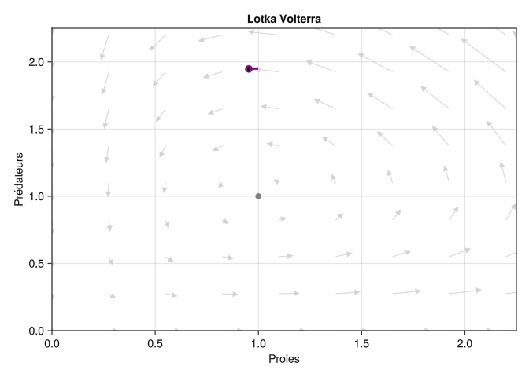

using GLMakie
x = 1:4
y = Observable(rand(4))
fig, ax = lines(x, y) 
Makie.jl
Nous reprenons le modèle de Lotka Volterra, et testons les capacités de création de graphiques animés avec Makie.jl1. Ce document est largement inspiré par l’excellent tutoriel sur le double pendule chaotique par G. Datseris.
1 Il est aussi possible de créér sur le même modèle des graphiques interactifs
Le principe tire partie des conteneurs Observable, qui sont des conteneurs mutables que l’on peut donc modifier et dont on peut surveiller l’action de modification. Lorsqu’un Observable passé à Makie.jl est modifié, ce dernier le prend en compte et met à jour le graphique correspondant automatiquement. Cela fonctionne particulièrement bien avec le backend GL, qui depuis un script ou un notebook ouvre une fenetre graphique qui se met à jour automatiquement. Sur cette page, il nous faut réafficher la figure.
Prenons un exemple, sur une simple figure, on définit un Observable random puis on le trace:
using GLMakie
x = 1:4
y = Observable(rand(4))
fig, ax = lines(x, y)
Ensuite on réassigne la valeur de l’observable2 et on réaffiche la figure qui s’est mise à jour automatiquement, sans retracer la line.
2 notez la syntaxe y[]= qui assigne le contenu de l’observable et informe le système de la mise à jour de l’observable
y[] = rand(4)
fig
Il s’agit d’exploiter ce principe pour créér un graphique animé.
Nous allons représenter la trajectoire au cours du temps comme un point mobile dans l’espace d’état, avec une “queue” qui représente les valeurs de l’état dans le passé proche.
On commence par définir les fonctions et paramètres pour simuler le modèle et créer un problème ODE prob_lv.
using DifferentialEquations
# conditions initiales
x0 = 1.0
y0 = 1.95
etat0 = [x0, y0]
# paramètres
r = 1.0
c = 1.0
b = 1.0
m = 1.0
par_lovo = [r, c, b, m]
# temps
tspan = (0.0, 30.0)
tstep = .01
# définition du modèle
function lovo(u, par, t)
r, c, b, m = par
x, y = u
dx = r*x - c*x*y
dy = b*x*y - m*y
[dx, dy]
end
# define ODE problem
prob_lv = ODEProblem(lovo, etat0, tspan, par_lovo)Nous créons des observables pour l’état et pour la “queue” de simulation sous la forme d’objets de type Point2f3 (ou CircularBuffer4 de Point2f) pour les passer à Makie.
3 il s’agirait de la meilleure structure pour tracer des points en 2D pour Makie
4 vecteur de taille fixe qu’on remplit/vide avec push!()
# observable pour l'état
x, y = etat0
state_lv = Observable(Point2f(x, y)) # initialisation
# observable pour la queue
using DataStructures: CircularBuffer
tailsize = 600
tail = CircularBuffer{Point2f}(tailsize) # une queue de simulation
fill!(tail, Point2f(x, y)) # que l'on initialize sur la condition initiale
tail = Observable(tail) # et que l'on transforme en ObservableL’animation repose sur une simulation de proche en proche, pour cela nous utilisons l’interface integrator de DifferentialEquations.jl et la fonction step!(integrator) qui calcule la solution au bout d’un pas de temps. Nous créons une fonction qui effectue ce calcul et met à jour les Observables état et queue (en place !).
integrator_lv = init(prob_lv) # interface integrator
function step_lv!(integrator, state_lv, tail)
step!(integrator, 0.01, true) # calcule la solution a t+0.01, en place
x, y = integrator.u # assigne la solution à x et y
state_lv[] = Point2f(x, y) # met à jour l'Observable
push!(tail[], Point2f(x,y)) # assigne la nouvelle valeur dans la queue, en place
tail[] = tail[] # l'opération en place n'indique pas la mise à jour de l'Observable
endIl faut maintenant définir la figure en elle-même:
fig = Figure()
ax = Axis(fig[1, 1], xticks = 0:.5:2, yticks = 0:.5:2)
# champs de vecteur
scale = 10
xrange = range(0, 2.75, length=11)
yrange = range(0, 2.75, length=11)
derx = [lovo([x y], par_lovo, 0)[1]/scale for x in xrange, y in yrange]
dery = [lovo([x y], par_lovo, 0)[2]/scale for x in xrange, y in yrange]
arrows!(ax, xrange, yrange, derx, dery,
color = :lightgray,
arrowsize = 10)
# plot of the state
scatter!(ax, state_lv,
marker = :circle,
strokewidth = 2,
strokecolor = :purple,
color = :black,
markersize = 8)
# equilibrium
scatter!(ax, m/b, r/c, marker = :star, color = :grey, markersize = 14)
# plot of the tail
col = to_color(:purple)
tailcol = [RGBAf(col.r, col.g, col.b, (i/tailsize)^2) for i in 1:tailsize]
lines!(ax, tail, linewidth = 3, color = tailcol)
# enluminures
ax.title = "Lotka Volterra"
ax.xlabel = "Proies"
ax.ylabel = "Prédateurs"
xlims!(ax, 0, 2.25)
ylims!(ax, 0, 2.25)
fig
# test the 2D plot
for in in 1:1000
step_lv!(integrator_lv, state_lv, tail)
sleep(.001)
endDepuis un script ou un notebook, la figure proposée par GLMakie devrait s’animer. Ici nous ne pouvons qu’afficher la dernière simulation :
fig
Il faut générer une image animée pour pouvoir visualiser l’animation sur cette page html.
On peut commencer par réunir tout le code d’initialisation et de génération de figure dans une fonction, pour facilement réinitialiser:
function init_anim_lv(etat0)
# Odeproblem, integrator
prob_lv = ODEProblem(lovo, etat0, tspan, par_lovo)
integrator_lv = init(prob_lv)
x, y = etat0
state_lv = Observable(Point2f(x, y))
tailsize = 600
tail = CircularBuffer{Point2f}(tailsize)
fill!(tail, Point2f(x, y))
tail = Observable(tail)
fig = Figure()
ax = Axis(fig[1, 1], xticks = 0:.5:2, yticks = 0:.5:2)
scale = 10
xrange = range(0, 2.75, length=11)
yrange = range(0, 2.75, length=11)
derx = [lovo([x y], par_lovo, 0)[1]/scale for x in xrange, y in yrange]
dery = [lovo([x y], par_lovo, 0)[2]/scale for x in xrange, y in yrange]
arrows!(ax, xrange, yrange, derx, dery,
color = :lightgray,
arrowsize = 10)
scatter!(ax, state_lv,
marker = :circle,
strokewidth = 2,
strokecolor = :purple,
color = :black,
markersize = 8)
r, c, b, m = par_lovo
scatter!(ax, m/b, r/c, marker = :star, color = :grey, markersize = 14)
col = to_color(:purple)
tailcol = [RGBAf(col.r, col.g, col.b, (i/tailsize)^2) for i in 1:tailsize]
lines!(ax, tail, linewidth = 3, color = tailcol)
ax.title = "Lotka Volterra"
ax.xlabel = "Proies"
ax.ylabel = "Prédateurs"
xlims!(ax, 0, 2.25)
ylims!(ax, 0, 2.25)
return fig, integrator_lv, state_lv, tail
endNous générons la figure animée sous forme d’un gif.
fig, integrator_lv, state_lv, tail = init_anim_lv(etat0)
frames = 1:132
record(fig, "lv.gif", frames; framerate = 60) do i
for j in 1:5
step_lv!(integrator_lv, state_lv, tail)
end
endEt finalement nous pouvons afficher la figure animée: 
Au prix d’une modification très minime du code ci-dessus, on peut facilement créér une animation de la trajectoire en 3 dimensions (x, y, H(x,y)). Il faut essentiellement remplacer le système d’axe 2D par un système d’axe 3D Axis3 et les objets Point2f par des Point3f.
# on définit l'intégrale première
function int_prem(x, y, par = par_lovo)
r, c, b, m = par
H = -r*log(y) + c*y - m*log(x) + b*x
return H
end
function init_anim3d_lv(etat0)
# Odeproblem, integrator
prob_lv = ODEProblem(lovo, etat0, tspan, par_lovo)
integrator_lv = init(prob_lv)
x, y = etat0
H0 = int_prem(x, y)
state3d_lv = Observable(Point3f(x, y, H0))
tailsize = 1000
tail3 = CircularBuffer{Point3f}(tailsize)
fill!(tail3, Point3f(x, y, H0))
tail3 = Observable(tail3)
fig = Figure()
ax = Axis3(fig[1, 1], azimuth = 0.5, elevation = 0.2, xticks = 0:.5:2, yticks = 0:.5:2)
scatter!(ax, state3d_lv,
marker = :circle,
strokewidth = 2,
strokecolor = :purple,
color = :black,
markersize = 8)
col = to_color(:purple)
tailcol = [RGBAf(col.r, col.g, col.b, (i/tailsize)^2) for i in 1:tailsize]
lines!(ax, tail3, linewidth = 3, color = tailcol)
xsurf = .25: .1: 2.25
ysurf = .25:.1: 2.25
# calcul de la surface via une compréhension de liste
hsurf = [int_prem(x, y, par_lovo) for x in xsurf, y in ysurf]
# tracé de H(x,y) et du plan z = H(x0,y0)
hs = surface!(ax, xsurf, ysurf, hsurf, alpha=.2)
ax.title = "Lotka Volterra"
ax.xlabel = "Proies"
ax.ylabel = "Prédateurs"
ax.zlabel = L"$H(x,y)$"
xlims!(ax, 0, 2.25)
ylims!(ax, 0, 2.25)
zlims!(ax, 1.7, 3.5)
return fig, integrator_lv, state3d_lv, tail3
endOn adapte la fonction d’animation qui avance d’un pas de temps à la nouvelle structure des observables en 3D.
function animsteplv3!(integrator_lv, state3d_lv, tail3)
step!(integrator_lv, 0.01, true)
x, y = integrator_lv.u
state3d_lv[] = Point3f(x, y, state3d_lv[][3])
push!(tail3[], Point3f(x, y, state3d_lv[][3]))
tail3[] = tail3[]
endEt on génère une figure gif pour afficher sur cette page.
fig, integrator_lv, state3d_lv, tail3 = init_anim3d_lv(etat0)
frames = 1:132
record(fig, "lv3d.gif", frames; framerate = 60) do i
for j in 1:5
animsteplv3!(integrator_lv, state3d_lv, tail3)
end
endFinalement: